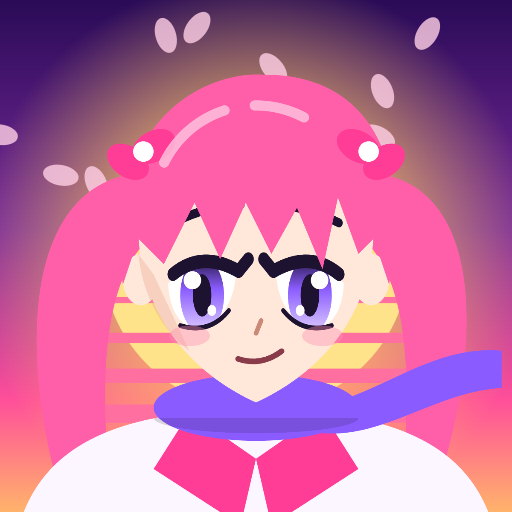
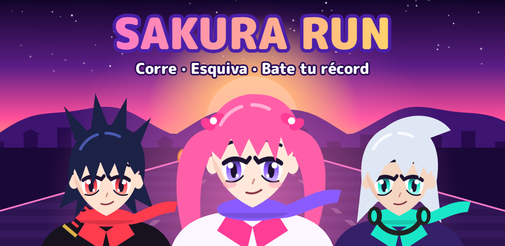
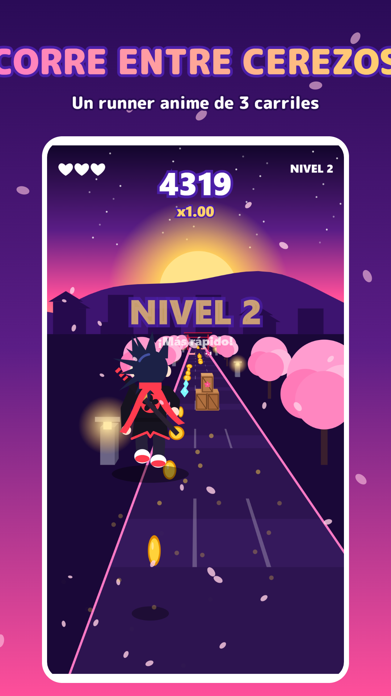
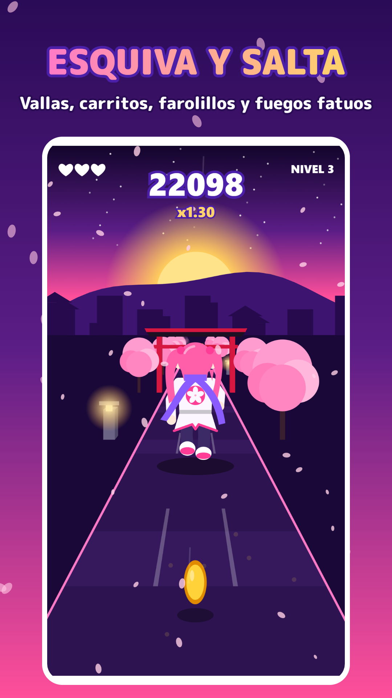
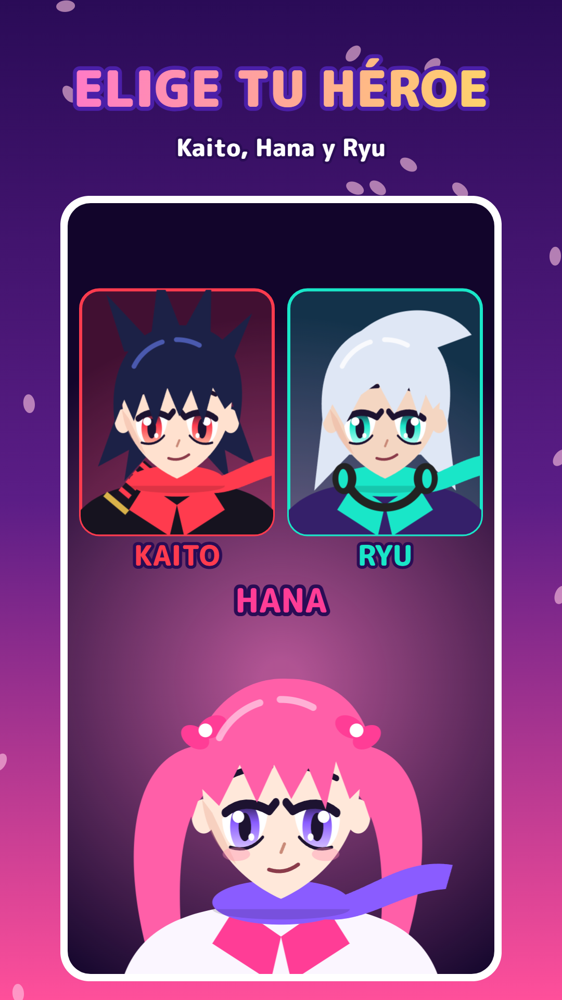
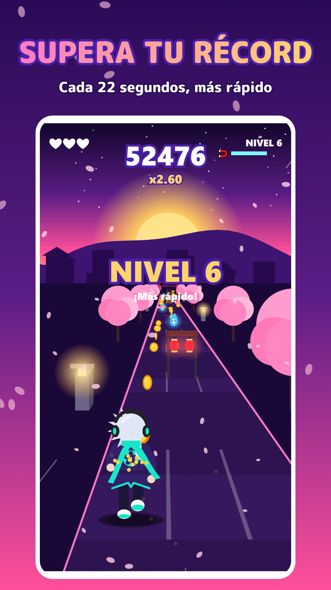

Kiko ZaZ Plays
Sakura Run
Endless runner de estilo anime para Android.
🌸 Gratis📴 Sin conexión📱 AndroidPróximamente en Google Play
El juego
Corre por un camino de cerezos al atardecer, esquiva obstáculos y llega lo más lejos que puedas. Desliza a los lados para cambiar de carril, hacia arriba para saltar y hacia abajo para deslizarte. Cada 22 segundos sube el nivel y todo va más rápido.
- ⛩️ Vallas, arcos de farolillos, pilas de cajas, carritos y fuegos fatuos.
- ✨ Monedas, gemas, imanes y estrellas que suben tu multiplicador.
- 🦸 Tres héroes: Kaito, Hana y Ryu.
- 🏆 Tu récord y tu nivel máximo se guardan en el móvil.
- 🎵 Música y personajes originales.




Privacidad y contacto
Sakura Run no tiene cuentas ni pide datos personales. Se financia con anuncios de Google AdMob. Detalles en la política de privacidad.
Contacto: kikozazplays@gmail.com